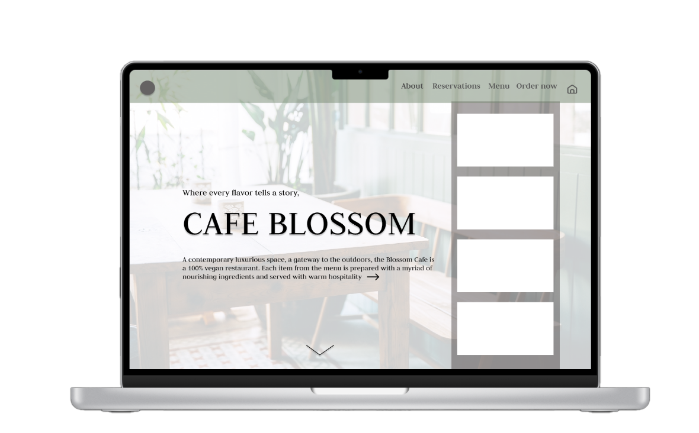
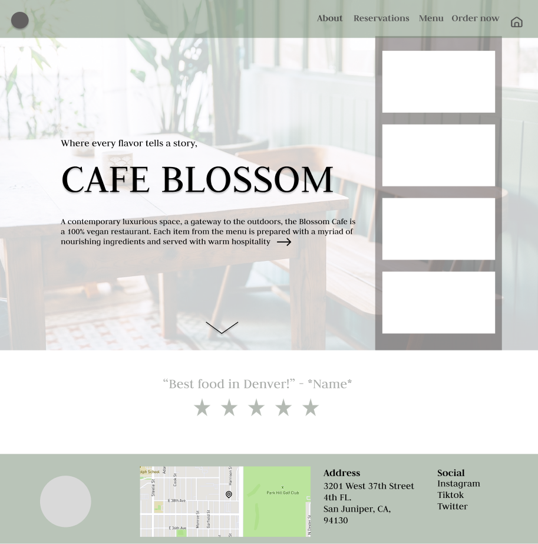
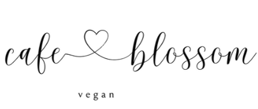
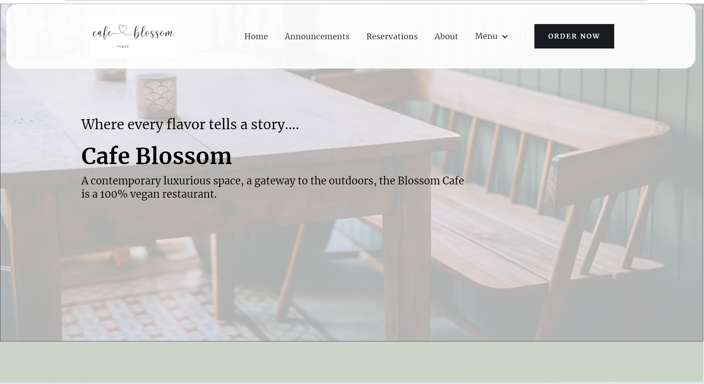
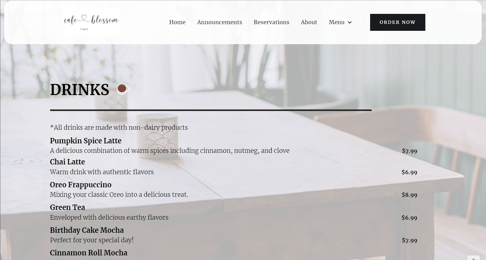
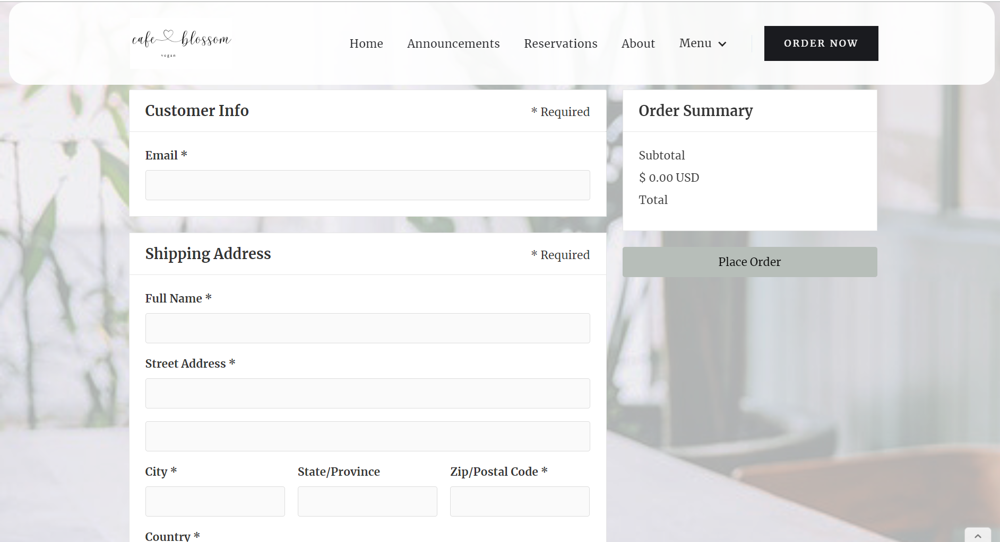

CAFE BLOSSOM
The ambiance is a blend of natural simplicity and modern comfort, with recycled materials and lush greenery creating a soothing atmosphere. The menu features a variety of dishes crafted from locally-sourced, organic ingredients, ranging from crisp salads to flavorful plant-based entrees. Whether you're a vegan, vegetarian, or simply a lover of fresh, sustainable cuisine, Cafe Blossom invites you to savor the essence of green living in every bite. As one of my very first websites, the website was intended to present the menu and online reservations serving as a website for the restaurant. Featured above is the figma prototype.
DESIGN PROCESS
I began by researching numerous other restaurant websites and creating a unique color palette that represented the brand I was creating. I researched menu items and created a business plan finding diverse ingredients that incorporated different cultures into green food. As a vegan, this website was important to me in creating something that exemplified the beauty of green foods.
I started by creating a figma mockup. Using intricate hues of green, I brought color to the design and a vision to the website. I used iterative designs, this being one of them, to create the most user centered design possible. The home page featured ratings of the design, an interactive map, the address, links to social media and a unique nav bar giving access to each page of the website. I incorporated the motto and a short description of the cafe in order to present the users with information as soon as they open the website.
As I began the project, I created a simple logo on Adobe Illustrator representing the minimalistic style of the brand. The "C" and "B" are subtly presented, forming a cohesive and elegant shape. The color palette is kept minimal, with a deep black hue exuding sophistication and timelessness. This logo encapsulates the essence of Cafe Blossom – a refined and contemporary space where simplicity and style converge in every cup.
Using iterative design, I began to create a more sophisticated look throughout the logo representing the brand better. As I began the actual website, I wanted to have a final logo that fully exemplified the restaurant.
Next, I began to think about the website itself. I wanted to ensure versatality of the website and create a functional website emphasizing clarity and impact whether displayed on signage, menus, or digital media. I chose a modern and refined font for the "CB" initials to reflect the cafe's contemporary and stylish image and wanted to carry that minimalistic design into the design as well. Additionally, I spent hours of research to creating a motto and using a business approach to this design carefully curating menu items and researching payment methods to promote utmost inclusivity.
Webflow Design
The primary goal of this project was to increase my experience in different softwares and explore different types of web design. I created this website through webflow. The platform's unique combination of a content management system (CMS) and design tools allows for dynamic content creation and easy management. From seamless animations to e-commerce integration, Webflow caters to both beginners and seasoned developers. The software integrates custom code of HTML, CSS, and JavaScript into its interface.
The website features a simplistic design with menus, a versatile nav bar with a call to action button and the logo. A variety of drinks are featured above with simple icons and descriptions to enhance user experience.
Additionally the ordering screen enhances user experience through an easy efficient transaction. THe total is featured on the right side and the colors are cohesive with the design. The font offers sophistication while remaining minamilistic allowing the users to understand the concept of the cafe.
Takeaways and Additional Steps
Using a new software and creating an interactive website on webflow for these designs enabled me to improve my skills in Webflow and user centered thinking. However, I noticed that complete customization was difficult with Webflow in comparison to coding it. I would like to continue expanding my experience in differetnt softwares and web development. Webflow enabled me to use an easier interface with more simple tools for payments and maps. I discovered the importance of APIs through linking the google map on the footer of the website. The key takeaway lies in improving user interaction with the interface and creating an efficient userflow. Learning from this first design, I began to incorporate user feedback, testing, and more research into my websites to create the most efficient user experience. This approach initiated my curiosity and passion towards web design and created a strong foundation of website design elements.